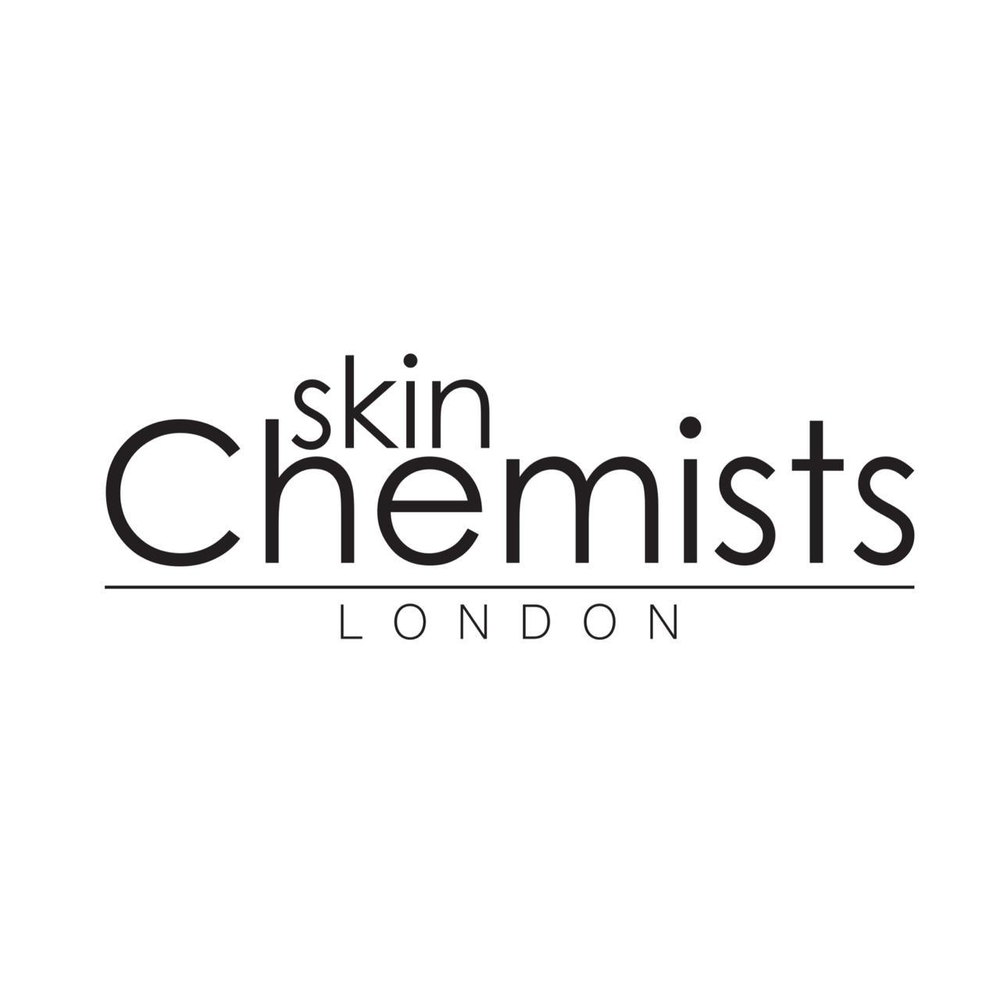

about us
skinChemists est une marque qui s’est dévoué afin de vous apporter les meilleurs produits de soins pour la peau à travers le monde.
Cette entreprise familiale nous ramène aux années 1890, quand l’entreprise SkinChemists Ridleys est présentée parmi le top des ventes de Quinine et Tonique,
qui était un mélange réparateur désigné pour la beauté. Désormais, skinChemists est reconnue à l’échelle internationale et est rapidement devenu connue pour son
« Wrinkle Killer Snake Sérum » qui utilise la technologie Suisse ayant été primée pour son ingrédient actif Syn-ake,
qui était adoré des célébrités et des spécialistes du soin pour la peau à travers le monde entier.
En collaboration avec des pharmaciens,
des chimistes, des scientifiques et des esthéticiennes du monde entier, SkinChemists à développé un niveau de produits efficaces de classe mondiale.
Sa croyance fondamentale reste fidèle à tout ce qu'elle fait aujourd'hui, soutenue par 50 ans d'expérience. Avec une distribution mondiale,
des centaines de milliers de personnes découvrent ce que les soins scientifiques faits avec passion, sentiment et amour peuvent faire chaque jour.
Surtout,
SkinChemists crée des traitements de la peau personnalisés qui vous aident à aimer votre propre peau en vous permettant de vous sentir plus confiant et en vous donnant les bases pour réussir dans votre vie.
